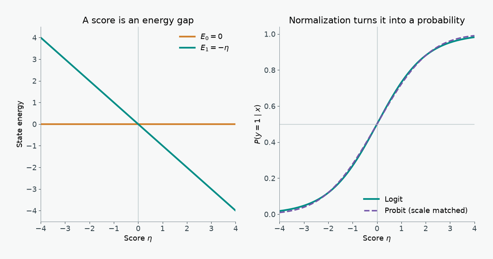

A binary classifier’s probability can be derived from an energy gap, fitted by an information cost, or obtained by adding noise to a threshold. These three descriptions agree for logistic regression, while the choice of latent noise explains where probit regression differs.
1 Physics: a two-state energy model
Fix an input \(x\in\mathbb R^d\) and a label \(y\in\{0,1\}\). Let \(\eta(x)=w^\mathsf{T}x+b\). Give the two states dimensionless energies
\[ E(y,x)=-y\eta(x),\qquad E(0,x)=0,\qquad E(1,x)=-\eta(x). \]
Only their difference affects the probabilities. In the chosen energy gauge,
\[ \Delta E(x)=E(0,x)-E(1,x)=\eta(x). \]
At inverse temperature \(\beta=1\), the partition function sums the two Boltzmann weights:
\[ Z(x)=\sum_{y=0}^{1}e^{-E(y,x)}=1+e^{\eta(x)}. \]
Normalizing the weight of state 1 gives the logistic sigmoid, step by step:
\[ \begin{aligned} P(y=1\mid x) &=\frac{e^{-E(1,x)}}{Z(x)}\\ &=\frac{e^{\eta(x)}}{1+e^{\eta(x)}}\\ &=\frac{1}{1+e^{-\eta(x)}} =\sigma\!\left(\eta(x)\right). \end{aligned} \]
Thus \(P(1\mid x)/P(0\mid x)=e^{\Delta E(x)}\): the linear score is the log odds and the energy gap. If we restore \(\beta=(k_\mathrm{B}T)^{-1}\), the sigmoid takes \(\beta\Delta E\) as its argument. Temperature rescales the coefficients; ordinary logistic regression fixes that scale at one.
The conditional Helmholtz free energy in these units is \(F(x)=-\log Z(x)=-\log(1+e^{\eta(x)})\). The zero of energy is arbitrary: adding the same \(c(x)\) to both state energies changes \(F\) by \(c(x)\) but leaves the energy gap and probabilities fixed. Statistical mechanics derives these relations from the canonical ensemble.
The two states are the possible labels at one fixed input, not two positions that \(x\) moves between. A physical counterpart is a spin that can point in two directions while an external field is held fixed: the field changes the energy gap, and thermal equilibrium favors the lower-energy direction. Here \(x\) sets the field through \(\eta(x)\), and choosing a label corresponds to choosing a spin direction. No motion between states or heat flow is modeled. The classifier’s energies are dimensionless scores unless a physical system supplies an energy scale and temperature; \(\beta=1\) alone does not measure a real temperature.
1.1 An energy surface to adjust
The display uses ten synthetic feature pairs, chosen to put both labels on either side of a linear boundary. They stand in for two standardized measurements in a binary classification task; no observed population or sampling claim is attached. A wrong classification would assign high probability to the opposite state, and the two-state model is a useful controlled example because its energy gap is visible directly.
The colored plane is \(E(1,x_1,x_2)=-(w_1x_1+w_2x_2+b)\); the faint horizontal plane is \(E(0,x_1,x_2)=0\). Teal points have observed label 1 and sit on the colored plane. Amber points have observed label 0 and sit on the zero-energy plane. Thin stems connect each observed state to its alternative. Lower energy means higher Boltzmann probability. A linear plane has lower-energy regions, not local wells or peaks.
- Increase \(w_1\): the colored plane tilts down as \(x_1\) increases, lowering the class-1 energy there.
- Increase \(b\): the entire class-1 plane drops while the class-0 plane stays at zero; \(P(1\mid x)\) rises at every point.
- Drag to orbit. The intersection of the two planes is the \(P(1\mid x)=0.5\) boundary.
2 Information: likelihood, surprise, and cross-entropy
The Boltzmann probability becomes a training rule when we observe labeled pairs \((x_i,y_i)\). Write \(\eta_i=w^\mathsf{T}x_i+b\) and \(p_i=\sigma(\eta_i)\). Conditional independence gives the Bernoulli likelihood
\[ L(w,b)=\prod_{i=1}^{n}p_i^{y_i}(1-p_i)^{1-y_i}. \]
Taking logs turns the product into a sum. Maximum likelihood therefore minimizes the average negative log-likelihood:
\[ \begin{aligned} -\frac1n\log L(w,b) &=-\frac1n\sum_{i=1}^{n}\left[y_i\log p_i+(1-y_i)\log(1-p_i)\right]\\ &=\frac1n\sum_{i=1}^{n}\left[\log(1+e^{\eta_i})-y_i\eta_i\right]\\ &=\frac1n\sum_{i=1}^{n}\left[E(y_i,x_i)+\log Z(x_i)\right]. \end{aligned} \]
The first line is binary cross-entropy (BCE). The per-example value \(-\log P(y_i\mid x_i)\) is the observed label’s surprisal, measured in nats. The last line shows the physical terms: lower observed-state energy helps, while the log partition function charges for assigning weight to both possible states. The standard log-loss definition is this negative log-likelihood.
The KL statement needs its empirical distribution stated. For a particular training pair, let \(q_i(y)=\mathbf 1\{y=y_i\}\), a point mass on the observed label. Since \(H(q_i)=0\),
\[ \operatorname{KL}\!\left(q_i\middle\|P_{w,b}(\cdot\mid x_i)\right) =-\log P_{w,b}(y_i\mid x_i) =\operatorname{BCE}(y_i,p_i). \]
If an input \(x\) has repeated observations and an empirical class frequency \(q(1\mid x)\), then \(H(q,P)=H(q)+\operatorname{KL}(q\|P)\). Its entropy \(H(q)\) does not depend on \(w,b\), so minimizing cross-entropy and KL still gives the same fit. This is a statement about the observed conditional frequencies; it does not say that an arbitrary finite sample recovers the population distribution.
Training adjusts the gap \(\Delta E(x)\) so observed labels occupy lower-energy states more often. The resulting change in \(F(x)=-\log Z(x)\) follows from the normalization.
2.1 Joint distribution of inputs and labels
The energy calculation normalizes over \(y\) at fixed \(x\). BCE likewise scores labels conditional on the observed inputs. Logistic regression therefore specifies \(P(y\mid x)\), but leaves the distribution of inputs unspecified. If we separately choose a marginal density or mass function \(q(x)\), then
\[ p(x,y)=q(x)P(y\mid x) =q(x)\frac{e^{-E(y,x)}}{Z(x)}. \]
Different choices of \(q\) give the same logistic conditional probabilities but different joint distributions, and can change the class balance \(P(y=1)\) and feature distributions within each class \(p(x\mid y)\). In particular, logistic \(P(y\mid x)\) does not imply Gaussian \(p(x\mid y)\); a generative model such as Gaussian discriminant analysis adds assumptions about the feature distributions. Stanford’s CS229 notes distinguish these directions.
This also limits the physical picture. \(Z(x)\) is a conditional partition function, not a normalizer over all \((x,y)\). A joint Boltzmann model needs an input measure or reference energy. If the raw weights \(e^{-E(y,x)}\) were integrable over \(x\), they would imply a feature marginal proportional to \(Z(x)\); with the chosen gauge \(E(0,x)=0\) on \(\mathbb R^d\), the integral is infinite. The plotted planes compare labels at each input, not the frequency or physical energy of input locations. A population average of BCE weights conditional errors by how often \(x\) occurs, but fitting BCE does not fit that input distribution.
3 Statistics: latent noise and the probit link
The same classifier can be built as a noisy threshold. Let
\[ y^*=\eta(x)+\epsilon,\qquad y=\mathbf 1\{y^*>0\}. \]
For a symmetric error distribution with cumulative distribution function \(G\),
\[ P(y=1\mid x)=P(\epsilon>-\eta)=G(\eta). \]
- Logit: \(\epsilon\) has a standard logistic distribution, \(G(z)=\sigma(z)\). An equivalent random-utility construction adds independent Gumbel errors to the two state utilities and compares them; their difference is logistic. A derivation of the Gumbel difference gives the same choice probability.
- Probit: \(\epsilon\sim\mathcal N(0,1)\), so \(G(z)=\Phi(z)\), the standard normal CDF. This is the probit link. With a normal error of standard deviation \(s\), the argument is \(\eta/s\).
The normal density can be written as \(\phi(t)\propto e^{-E(t)}\) with harmonic potential \(E(t)=t^2/2\). This potential belongs to the latent noise, not to the two-label energy surface in the first section. Probit and logit share a linear decision boundary at \(\eta=0\), but their probability tails differ:
\[ 1-\sigma(z)\sim e^{-z},\qquad 1-\Phi(z)\sim\frac{e^{-z^2/2}}{z\sqrt{2\pi}} \quad(z\to+\infty). \]
The logistic tail is heavier than the Gaussian tail; both decay faster than any power law. Coefficient scales must be matched before comparing curves, since standard logistic noise has variance \(\pi^2/3\) and standard normal noise has variance \(1\).
3.1 Tail decay and optimization
For a positive observation, the derivative of negative log-likelihood with respect to the score is
\[ \frac{d\ell_{\mathrm{logit}}}{d\eta}=\sigma(\eta)-1, \qquad \frac{d\ell_{\mathrm{probit}}}{d\eta}=-\frac{\phi(\eta)}{\Phi(\eta)}. \]
When \(\eta\to+\infty\), both gradients vanish, but the probit gradient vanishes on a Gaussian scale. When a positive label is assigned a large negative score, the logit gradient approaches \(-1\), while the probit gradient grows approximately as \(-\eta\). A confidently wrong or mislabeled example can therefore exert more gradient pressure under probit; logit’s bounded score gradient can be less sensitive to such extremes. This comparison concerns the gradient with respect to \(\eta\); the parameter gradient also multiplies \(x\), so neither model is automatically robust to high-leverage feature outliers.
4 Concept map
| Physics | Information theory | Binary classification |
|---|---|---|
| Energy gap \(E_0-E_1=\eta\) | Log odds \(\log(P_1/P_0)\) | Linear score \(w^\mathsf{T}x+b\) |
| Boltzmann weight \(e^{-E_y}\) | Probability assigned to a state | Bernoulli class probability |
| Partition function \(Z=1+e^\eta\) | Normalization inside surprisal | Log-sum-exp term in BCE |
| \(E_y+\log Z\) | Surprisal \(-\log P_y\) | Per-example negative log-likelihood |
| Changing the energy gap | Reducing conditional cross-entropy and KL | Fitting \(w,b\) by maximum likelihood |
| Holding \(x\) fixed | BCE scores \(P(y\mid x)\) | A joint \(p(x,y)\) also needs a marginal \(q(x)\) |
| Harmonic energy of Gaussian latent noise | Faster tail decay | Probit probability \(\Phi(\eta)\) |
Energies. Normalize. Probabilities. Observe. Surprise. Fit. Noise. Changes. Tails. Matter.
5 References
- Rutgers University, Statistical Mechanics, chapter 3 — canonical probabilities, partition functions, and free energy.
- Scikit-learn, log_loss documentation — Bernoulli negative log-likelihood and cross-entropy.
- Stanford, Learning and Inference via Maximum Inner Product Search — Gumbel noise differences and logistic choice probabilities.
- Statsmodels, Probit link documentation — the normal-CDF response function.
- Stanford CS229, Generative Learning Algorithms — discriminative and generative models and the limits of the logistic conditional form.